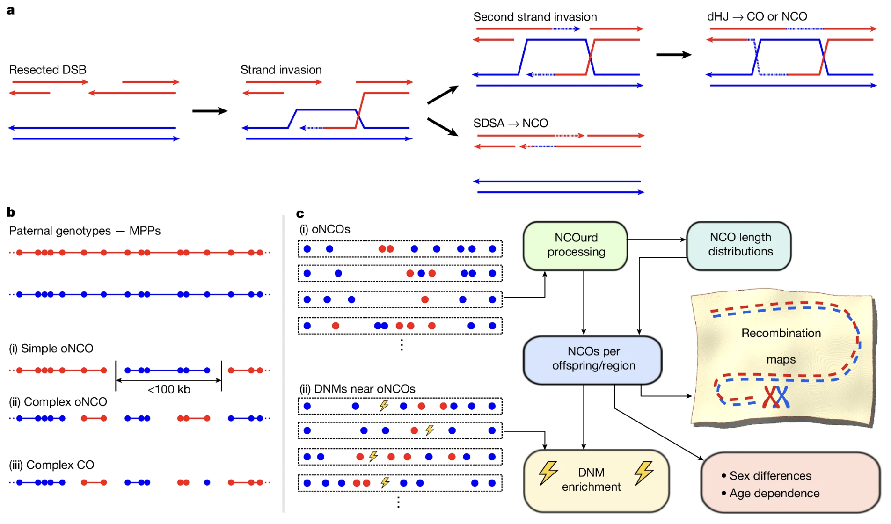
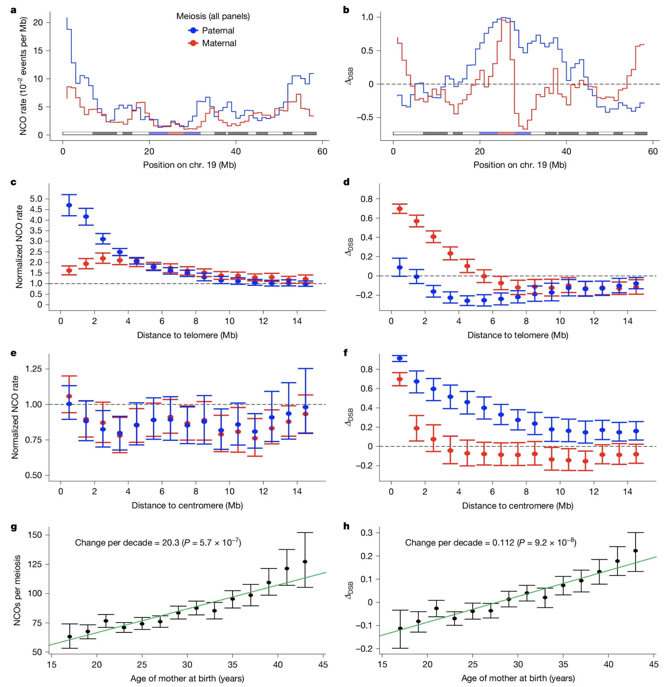

BSMS205 · Genetics
Recombination, Linkage,
Chapter 23 · Part IV · Population Genetics
Welcome to Chapter twenty-three, Recombination, Linkage, and Haplotype. In the previous chapter we followed the story from Mendel to Morgan and saw how Sturtevant turned recombination into a ruler. Today we pick up exactly there. We zoom in on the molecular machinery of recombination, we learn the modern vocabulary of linkage and haplotype, and we look at a major paper from twenty twenty-five that rewrote our map of the human genome.
A question every biology student asks
Why do siblingslook different?
Here is a question you have almost certainly wondered about. Why do siblings look different? You and your sister both got half your D N A from your mother and half from your father. Same parents, same gene pool. And yet nobody ever mistakes you for identical twins. Something must be happening at meiosis that makes each child a different mosaic. That something is called recombination. And by the end of today, you will understand it in full mechanistic detail.
Part of the answer · random assortment
Mom has two copies of each chromosome
One from grandma, one from grandpa
At every chromosome, she passes on one of the two
You might get mostly grandma's · your sister mostly grandpa's
Part of the answer is something we already know. Your mother has two copies of every chromosome — one she received from her own mother, and one from her own father. When she makes an egg, she passes on one of those two copies at every chromosome. By sheer chance, you might inherit mostly your maternal grandmother's versions while your sister inherits mostly your maternal grandfather's versions. That alone creates plenty of variation. But it is not the whole story.
The deeper answer · she passes a mosaic
During meiosis, matching chromosomes exchange DNA segments .
The chromosome you inherit from mom is part grandma, part grandpa
You can have grandpa's nose and grandma's eye colour even though both genes are on the same chromosome
This shuffling is called recombination
Here is the deeper answer. Your mother does not pass on her mother's chromosome intact. During meiosis, the matching chromosomes pair up and physically exchange segments. The chromosome you end up inheriting from your mother is a mosaic — part grandma, part grandpa. This is why you can have your maternal grandfather's nose and your maternal grandmother's eye colour, even if the genes for both traits sit on the same chromosome. Mendel would have been puzzled, but modern genetics has the answer. It is called recombination, and it is one of the most elegant mechanisms in biology.
Roadmap for today
Two flavours · cross-overs and non-cross-overs
What the 2025 Iceland study revealed
How CO and NCO form · the molecular dance
Linkage · alleles that travel together
Regional patterns · hotspots, cold spots, telomeres, centromeres
Haplotypes · blocks of inherited DNA
Here is how today flows. First, we split recombination into two flavours — the classic cross-over and the less familiar non-cross-over. Second, we look at a major twenty twenty-five paper from Iceland that produced the first complete map of human recombination. Third, we zoom into the molecular dance that produces both flavours from the same starting point. Fourth, we tie the mechanism to the concept of linkage. Fifth, we see how recombination is distributed unevenly across the genome. And sixth, we arrive at haplotypes — the blocks of inherited D N A that form the fundamental unit of population genetics.
§ 1
Two Flavours
Let's start by distinguishing the two kinds of recombination that happen during every meiosis.
Cross-over (CO) · the classical event
Large chunks of DNA get swapped between chromosomes
Two ropes cut at the same position · ends swapped
Easy to detect · creates long stretches of one ancestry where you expect the other
This is the event Morgan and Sturtevant studied
A cross-over is the classical event Morgan and Sturtevant studied. Large chunks of D N A get swapped between two paired chromosomes. The mental picture is two ropes, one red and one blue, lying side by side. You cut both ropes at the same position and swap the cut ends. Now one rope is red on the left and blue on the right, and the other is blue on the left and red on the right. That is a cross-over — a clean exchange of large segments. Cross-overs are relatively easy to detect because they create long stretches of D N A from one grandparent where you would expect the other.
Non-cross-over (NCO) · the hidden majority
A small stretch — a few hundred to a few thousand base pairs — gets copied from one chromosome to the other
Also called gene conversion
Overall structure barely changes · local sequence is altered
Hidden until high-resolution sequencing arrived
The second flavour is the non-cross-over, also called gene conversion. Instead of swapping large segments, a small stretch of D N A — typically a few hundred to a few thousand base pairs — gets copied from one chromosome to the other. The overall structure of the chromosome barely changes. But locally, the sequence has been altered. Non-cross-overs have been hiding in plain sight for most of the history of genetics. You cannot detect them without very high-resolution sequencing data from large families, and that capability only became available in the last few years.
NCOs outnumber COs · by a lot
5 – 10×
non-cross-overs per cross-over in a typical meiosis
Cross-overs were just the visible tip of the iceberg.
Here is the striking fact. Non-cross-overs are far more common than cross-overs. For every single cross-over that happens during a meiosis, there are five to ten non-cross-overs. That is an order of magnitude more events, and most of them have been invisible to classical genetics. The cross-overs Morgan and Sturtevant counted were just the visible tip of the iceberg. Most of the recombination activity in a meiosis is happening quietly, in the form of small gene conversion events.
Both start the same way
Every recombination event starts with a double-strand break (DSB) — a deliberate cut in both strands of the DNA helix.
Cells make these breaks on purpose during meiosis
Sounds dangerous · is dangerous if it goes wrong
Repaired using the matching chromosome as a template
How repair proceeds → CO or NCO
Both cross-overs and non-cross-overs share a common starting point. They both begin with a double-strand break — a deliberate cut through both strands of the D N A double helix. Your cells make these breaks on purpose during meiosis. This sounds dangerous, and it is — if it goes wrong, you get mutations or chromosome breaks that cannot be repaired. But it is a highly controlled process. The break is repaired using the matching homologous chromosome as a template. Depending on how the repair machinery proceeds, you get either a cross-over or a non-cross-over. Same starting event, two possible outcomes.
§ 2
The 2025 Iceland Study
In twenty twenty-five, a landmark paper completely rewrote our understanding of human recombination.
Palsson et al. · Nature 2025
Whole-genome sequences from over 5,000 Icelandic families
Parents · children · often grandparents
First complete human recombination map including both CO and NCO
Tens of thousands of events classified
Palsson et al. 2025, Nature
The study I want you to know about is Palsson and colleagues, published in Nature in twenty twenty-five. They used whole-genome sequencing data from over five thousand Icelandic families. Crucially, they had parents, children, and in many cases grandparents, all sequenced. This gave them the resolution to identify every place where the child's D N A switched from matching one grandparent's pattern to matching the other. The result was the first complete map of human recombination that included both cross-overs and non-cross-overs. Previous maps had only tracked cross-overs, so they were missing most of the action. Tens of thousands of events were identified and classified.
Finding 1 · non-cross-overs dominate
Per meiosis · COs
40 – 60
across all 23 chromosome pairs
Per meiosis · NCOs
several 100s
an order of magnitude more
The first finding is the sheer numbers. On average, each meiosis produces about forty to sixty cross-overs across all twenty-three chromosome pairs. That matches what we already knew from classical mapping. But the same meiosis produces several hundred non-cross-overs. That is an order of magnitude more events. Most of recombination, by count, is non-cross-over activity. It had been invisible to us because each individual N C O is small and easy to miss without very high-resolution data.
Finding 2 · mothers ≠ fathers
Maternal meiosis: more COs (well known)Maternal NCOs: longer — typically 1,000 – 2,000 bp Paternal NCOs: shorter — typically 300 – 500 bp Why? Unknown · molecular machinery differs in eggs vs sperm
The second finding is that mothers and fathers recombine differently. It was already known that maternal meiosis produces more cross-overs than paternal meiosis. What is new is that mothers also produce longer non-cross-overs than fathers. A typical maternal N C O converts one thousand to two thousand base pairs. A typical paternal N C O converts only three hundred to five hundred base pairs. So the geometry of gene conversion is genuinely different between eggs and sperm. Why? We do not yet know. Something about the molecular machinery must work differently in the two contexts.
Finding 3 · maternal age raises NCOs
Older mothers produce more NCOs per egg
Effect is strongest outside programmed hotspots
Cross-overs do not change much with age
Possibly a compensatory mechanism as hotspots fail
The third finding is a maternal age effect. As women age, the number of non-cross-overs in their eggs goes up, especially outside the normal recombination hotspots. Cross-overs, by contrast, do not change much with age. The investigators suggest that the extra N C Os might be compensatory — when the programmed hotspot machinery starts to fail with age, a backup mechanism kicks in to ensure that chromosomes still pair correctly. It is not perfect, and the extra events might contribute to age-related chromosome segregation errors, but it is better than no recombination at all.
Finding 4 · centromeres · CO-suppressed
Near centromere: cross-overs are rare
A CO near a centromere can disrupt chromosome segregation
But NCOs happen readily there
NCOs may help homologues recognise and pair without the risk
The fourth finding concerns the centromere — the pinched middle region of each chromosome where spindle fibres attach during cell division. Near the centromere, cross-overs are very rare. This makes evolutionary sense. A cross-over near the centromere could disrupt how the spindle attaches and pulls chromosomes apart, causing aneuploidy. But non-cross-overs happen readily in these regions. This is interesting because it suggests the two kinds of events serve different roles. Non-cross-overs may help homologous chromosomes find and pair with each other, without the segregation risk that a cross-over would introduce at the centromere.
How they detected it

DSB → strand invasion → dHJ (gives CO or NCO) or SDSA (gives NCO).Nature . CC BY-NC-ND 4.0.
This is Figure one of the Palsson paper. On the left you see the molecular mechanism. A double-strand break is made in one chromosome. The broken end invades the homologous chromosome. From there, two paths diverge. The top path forms a double Holliday junction and can be resolved into either a cross-over or a non-cross-over. The bottom path is called synthesis-dependent strand annealing, and it produces only non-cross-overs. On the right you see the computational detection pipeline — matching children to grandparents and looking for the switch points. Every detected event was classified as C O or N C O based on the size of the converted region.
§ 3
The Molecular Dance
Let's zoom into the actual molecular events. What happens between the double-strand break and the final resolution.
Step 1 · double-strand break
Both strands of the DNA helix are cut
The break is made on purpose · catalysed by SPO11
Happens on one of the two paired chromosomes
Step one. A double-strand break is made. Both strands of the D N A helix are cut. The enzyme that catalyses this in mammals is called S P O eleven. The break happens on one of the two paired homologous chromosomes — let's call that one red and its partner blue. The location is not random. The cell directs breaks to specific sites in the genome.
Step 2 · end processing and strand invasion
Broken ends processed → single-stranded tail (3' overhang)
Tail invades the homologous chromosome
Uses the matching sequence on the other chromosome as a template
Step two. The broken ends are processed to create a single-stranded tail — specifically a three-prime overhang. This single-stranded tail then invades the matching region on the blue chromosome. It is searching for a homologous sequence, and when it finds one, it uses the blue chromosome as a template to start copying D N A. This step is critical because it is what makes recombination between specifically homologous partners possible.
Now the fork in the road
How does the cell resolve the invasion structure?
Two paths. Two different outcomes.
After the invading strand starts copying from the blue chromosome, the cell faces a choice. How does it resolve the invasion structure? Two paths are possible, and each leads to a different outcome. This decision is one of the most important regulatory steps in meiotic recombination.
Path 1 · SDSA → non-cross-over
Synthesis-Dependent Strand Annealing Invading strand copies a short stretch from blue
Then pulls back and re-anneals to its original red partner
Small patch converted · large-scale structure unchanged
Path one is called synthesis-dependent strand annealing, abbreviated S D S A. The invading red strand copies a short stretch of information from the blue chromosome, and then it pulls back and re-anneals to its original red partner. The result is that a small patch of D N A has been converted from the red sequence to the blue sequence. But the chromosomes have not swapped large segments. Everything flanking the patch is still red. This is a non-cross-over. A local, short-range change, with no change to the overall chromosome structure.
Path 2 · double Holliday junction → cross-over
Double Holliday Junction (dHJ) formsInvading strand stays attached · DNA synthesis extends the connection
Two chromosome junctions form
When resolved · large flanking regions swap
Path two is called the double Holliday junction pathway. Instead of pulling back, the invading strand stays attached. D N A synthesis extends the connection between the two chromosomes. Eventually, two physical junctions form — these are the Holliday junctions. When these junctions are resolved by specialised enzymes that cut and rejoin D N A, the two chromosomes physically swap their flanking regions. The result is a cross-over — a large-scale exchange of D N A between the two homologues.
Which path does the cell choose?
One of the big mysteries in meiosis biology
Specific proteins promote one outcome over the other
Local chromatin context (DNA packaging) matters
Outcome is biased toward NCO · but COs are crucial
Which path does the cell choose? This is one of the big open questions in meiosis biology. We know that specific proteins bias the outcome one way or the other. We know that local chromatin context matters — how tightly packaged the D N A is, which histone modifications are present. And we know that the default outcome is strongly biased toward non-cross-overs. But cross-overs are not optional. Every chromosome needs at least one cross-over to ensure proper segregation. So the cell actively regulates this balance across each chromosome, each meiosis, each sex, and each age.
§ 4
Linkage
Now let's connect the molecular mechanism back to the concept of linkage we learned last chapter.
Linkage · alleles that travel together
The tendency of alleles close together on the same chromosomepair .
Recombination is random with respect to position
The closer two variants are, the less likely a recombination lands between them
If nothing separates them, they travel together
Linkage describes the tendency of alleles located close together on the same chromosome to be inherited as a pair. Why does this happen? Because recombination is random with respect to position — at least on average, although hotspots bias this somewhat. The closer two variants are on a chromosome, the less likely it is that a recombination event will land between them. And if no recombination event separates them, they travel together from parent to child as a linked pair. This is the fundamental observation that Morgan documented a hundred years ago, and it is still the statistical backbone of human genetic analysis today.
Recombination fraction · r
r Meaning Genetic distance
0 Complete linkage 0 cM · right next to each other 0.01 Tightly linked ~1 cM 0.10 Moderately linked ~10 cM 0.5 Unlinked · independent assortment far apart / different chromosomes
We quantify linkage with a single number: the recombination fraction, r. It is the probability that two loci will be separated by recombination in a single meiosis. When r equals zero, the loci are completely linked — so close that recombination never separates them. When r equals zero point one, they recombine ten percent of the time, corresponding to roughly ten centiMorgans of genetic distance. When r equals zero point five, they are unlinked — recombining half the time, which is the signature of independent assortment. That is Mendel's second law. Note that r cannot exceed zero point five. Once you reach fifty percent recombination, you have independence, and adding more physical distance does not push it higher.
Why linkage matters
Linkage analysis for Mendelian diseasesMarker near disease allele → co-segregates with disease
Narrow the search from 3 Gbp to 10 Mbp
Modern GWAS: linkage disequilibrium extends this idea
Why is linkage so central to human genetics? Because it is the basis of how we find disease genes. Suppose a disease runs in a family, and you do not yet know which gene causes it. You type a panel of genetic markers, and you ask: is any marker inherited along with the disease, more often than expected? If yes, the disease gene is close to that marker. You have narrowed the search from the entire three billion base pair genome to a chromosomal region of perhaps ten million base pairs. Classical linkage analysis solved cystic fibrosis and Huntington's disease with exactly this logic. Modern genome-wide association studies extend the same idea using a statistical concept called linkage disequilibrium.
NCOs break linkage too
Short gene conversions also separate nearby variants
Previous linkage maps missed this contribution
Including NCOs → more accurate linkage estimates
Especially matters for very close variant pairs
One subtle point the twenty twenty-five Iceland paper made. Non-cross-overs break linkage too, even though they do not swap large segments. If a short gene conversion happens to land between two variants, those variants are separated — their alleles now come from different grandparents. Previous linkage maps were built only from cross-overs, so they missed this contribution. Including non-cross-overs gives us more accurate linkage estimates, especially for variants that are very close together. This matters for fine-mapping disease loci and for interpreting short-range haplotype structure.
§ 5
Regional Patterns ·
Recombination is not uniform along the chromosome. Let's look at the regional patterns.
Telomeres · CO-rich
Chromosome ends are rich in cross-overs
COs at the ends don't disrupt chromosome architecture
Functional role: ensure proper segregation
Every chromosome needs at least one CO to segregate correctly
At the telomeres — the ends of the chromosomes — cross-overs are enriched. If you plot cross-over frequency along a chromosome, you see peaks near both ends. This is not an accident. Cross-overs at the ends do not disrupt the overall structure of the chromosome, and they serve a critical function. Every pair of homologous chromosomes needs at least one cross-over during meiosis. Without a cross-over, the chromosomes may fail to segregate correctly, leading to aneuploidy — the wrong number of chromosomes in the egg or sperm. Telomere-biased crossing over is a safeguard.
Centromeres · CO-suppressed
Near the centromere · cross-overs are rare
A CO there could disrupt spindle attachment → aneuploidy
But NCOs happen readily here
NCOs may help homologues pair without the segregation risk
At the centromere — the middle of the chromosome — the opposite is true. Cross-overs are rare. A cross-over near the centromere could interfere with how the spindle fibres attach and pull the chromosomes apart. So evolution has selected against cross-overs in these regions. But, as the twenty twenty-five paper showed, non-cross-overs happen readily at centromeres. This may serve an important pairing function — helping homologous chromosomes recognise each other and align, without the segregation risks of a full cross-over.
Hotspots · short regions of concentrated activity
Typically 1 – 2 kb wide
Recombination is much more frequent than average
Marked by the DNA-binding protein PRDM9
PRDM9 recognises specific sequence motifs · recruits DSB machinery
Scattered across the genome are short regions called hotspots. These are typically one to two kilobases wide, and they experience recombination — both cross-over and non-cross-over — at rates much higher than the genome-wide average. Hotspots are marked by a D N A-binding protein called P R D M nine. This protein recognises specific sequence motifs, binds to them, and recruits the molecular machinery that makes double-strand breaks. Most recombination events cluster at P R D M nine-defined hotspots.
Hotspots move between populations
PRDM9 itself is highly variable between humansDifferent versions recognise different DNA motifs
A hotspot active in Europeans may be silent in East Asians
Over evolutionary time, hotspot locations drift
Here is a subtle and fascinating detail. P R D M nine itself is highly variable between people. Different versions of the protein recognise different D N A sequence motifs. The consequence is that hotspot locations vary between individuals and between populations. A hotspot that is highly active in Europeans may be silent in East Asians, and vice versa. Over evolutionary time, as different P R D M nine variants rise and fall in populations, the entire landscape of recombination hotspots shifts. Hotspot locations are not permanent fixtures of the genome. They migrate with the genotype of P R D M nine.
Regional patterns visualised

Chromosome 19 · paternal NCOs rise near telomeres · centromere is CO-suppressed · maternal age raises NCO rate by ~20 events per decade . Nature . CC BY-NC-ND 4.0.
This is Figure two from the Iceland paper, showing chromosome nineteen as an illustration. Look at the paternal N C O rate, the blue line, rising sharply near the telomeres. Now look at the centromere in the middle, marked in grey — cross-overs are suppressed there. The maternal pattern in red is flatter and lower. And the maternal age effect at the bottom shows roughly twenty additional non-cross-over events per decade of maternal age. This one figure captures the three major patterns we have discussed: sex differences, chromosomal region effects, and the age effect. It is the modern replacement for Sturtevant's nineteen thirteen map.
§ 6
Haplotypes
Now we arrive at the third concept of this chapter — haplotypes.
Haplotype · a block inherited together
A haplotype is a set of DNA variants inherited together from one parent.
Because recombination is occasional, nearby variants stay linked for many generations
Forms a "block" of co-inherited alleles
The fundamental unit of population genetics
A haplotype is a set of D N A variants that are inherited together from a single parent. Because recombination only shuffles chromosomes occasionally, nearby variants tend to remain linked across many generations. They form blocks of co-inherited alleles — haplotypes. Haplotypes are the fundamental unit of population genetics. Instead of treating each variant independently, we often work with haplotypes — the natural units that are passed from parent to child as coherent pieces.
The beaded necklace analogy
Each chromosome = a necklace · each bead = a SNP
Grandma's necklace: red -blue -blue -green -red
Grandpa's necklace: blue -red -green -green -blue
Mom's egg: a mosaic of both · that mosaic = the haplotype she passes on
Let me give you the analogy I find most useful. Think of a chromosome as a beaded necklace, with each bead representing a D N A variant such as a single-nucleotide polymorphism. Your maternal grandmother had one necklace, say red, blue, blue, green, red. Your maternal grandfather had another, say blue, red, green, green, blue. Your mother inherits one bead pattern from each of her parents. But when she makes an egg, recombination stitches pieces of the two necklaces together. The egg she passes to you contains a mosaic — maybe the first three beads from grandma, then a recombination breakpoint, then the rest from grandpa. That specific mosaic pattern is the haplotype you inherit. It is unique to your mother's specific meiosis.
How haplotypes reveal recombination
Sequence child + both parents + grandparents
Walk along chromosome · track which grandparent each variant matches
A switch point = a recombination event
Large switch (Mb) = cross-over · short switch (kb) = NCO
Here is how haplotypes let us detect and classify every recombination event. You sequence a child, both parents, and ideally all four grandparents. Then you walk along each chromosome in the child's genome, asking: at this variant, does the child's allele match grandma's or grandpa's? For a long stretch, the answer might be grandma. Then at some point, the answer switches to grandpa. That switch point is a recombination event. If the switch covers a large region — many megabases on one side, many on the other — it is a cross-over. If the switch is short — a few kilobases before the pattern reverts — it is a non-cross-over. This is exactly the logic the twenty twenty-five Iceland paper used to classify tens of thousands of events.
§ 7
Why This Matters
Let's step back and ask why any of this matters for genetics, medicine, and evolution.
Four domains
Diversity — recombination creates new allele combinations every generationDisease genetics — complete maps sharpen fine-mappingReproductive health — CO errors cause aneuploidy · miscarriage · Down syndromeHuman evolution — haplotype block lengths record demographic history
Four domains where this matters. First, diversity. Recombination is the engine of genetic variation. Without it, beneficial alleles on separate chromosomes could never be combined into a single individual. Evolution would have much less raw material to work with. Second, disease genetics. Complete recombination maps, including non-cross-overs, improve fine-mapping of disease loci and sharpen the interpretation of linkage disequilibrium patterns. Third, reproductive health. Errors in cross-over placement cause aneuploidy, which underlies many cases of miscarriage and disorders like Down syndrome. Understanding how cross-overs are regulated, and how they fail with age, is a major medical frontier. And fourth, human evolution. The length distribution of haplotype blocks records demographic history — bottlenecks, admixture events, and selective sweeps — all readable by anyone who can reconstruct haplotypes.
What to take away
Recombination has two flavours · COs and NCOs
NCOs outnumber COs by a factor of five to ten
Maternal vs paternal meiosis · different rates, different NCO lengths
Centromeres suppress COs · telomeres enrich them · PRDM9 defines hotspots
Haplotypes are the blocks of co-inherited alleles that record recombination history
Five takeaways. One. Recombination has two flavours — cross-overs that swap large segments, and non-cross-overs that copy short patches. Two. Non-cross-overs outnumber cross-overs by a factor of five to ten. Most of meiotic recombination, by event count, is gene conversion. Three. Maternal and paternal meiosis differ in both cross-over rate and non-cross-over length, and maternal age increases non-cross-overs. Four. Regional patterns are non-random — centromeres suppress cross-overs, telomeres enrich them, and scattered P R D M nine-defined hotspots concentrate most events. And five. Haplotypes — blocks of co-inherited alleles — are the natural unit that records every recombination event in human history.
Next lecture
How do we encode
Chapter 24 · Data Types for Alleles and Populations
Where do we go next? We have now covered the biology — allele frequency, population structure, linkage, recombination, haplotypes. But how do we actually store and share all this information in computational form? That is the subject of Chapter twenty-four, Data Types for Alleles and Populations. We will meet the V C F format and the universal vocabulary of modern genomics. See you then.